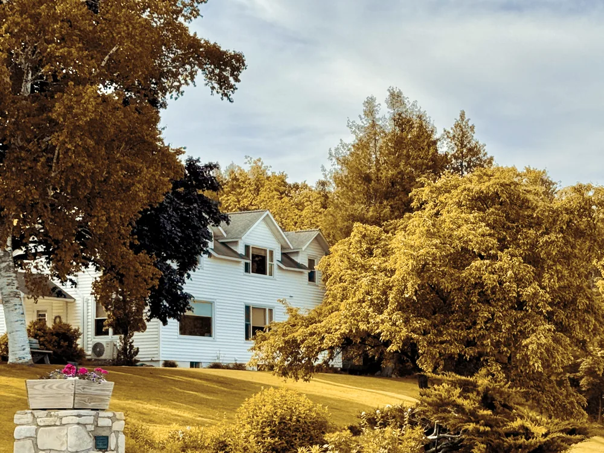
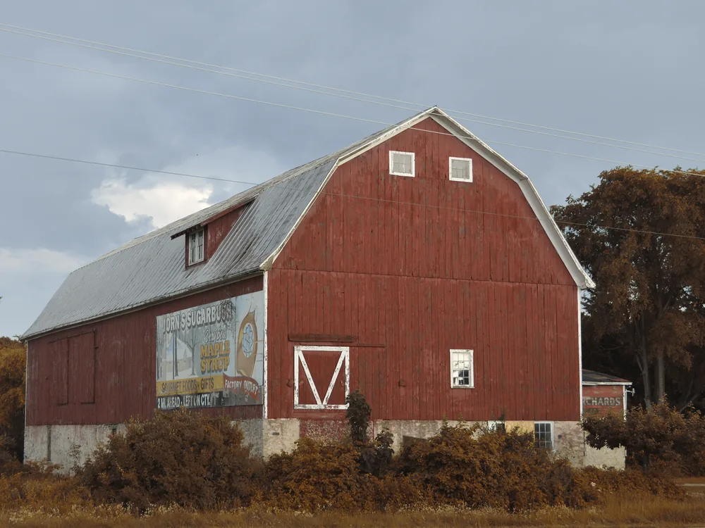
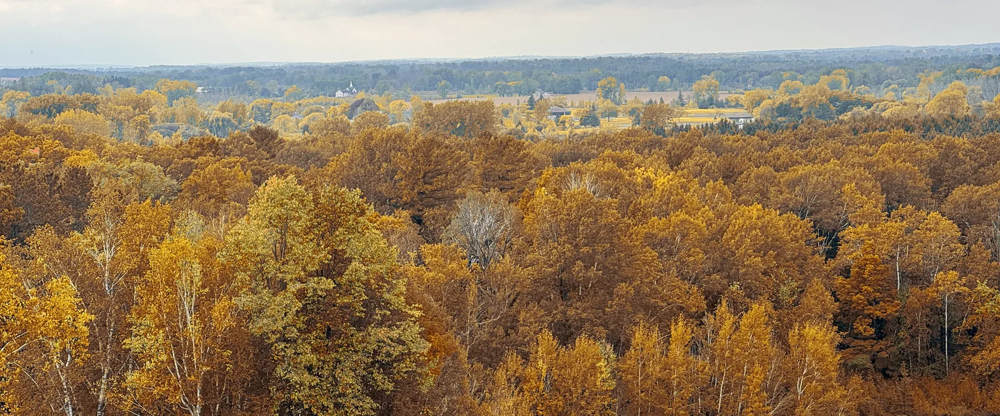
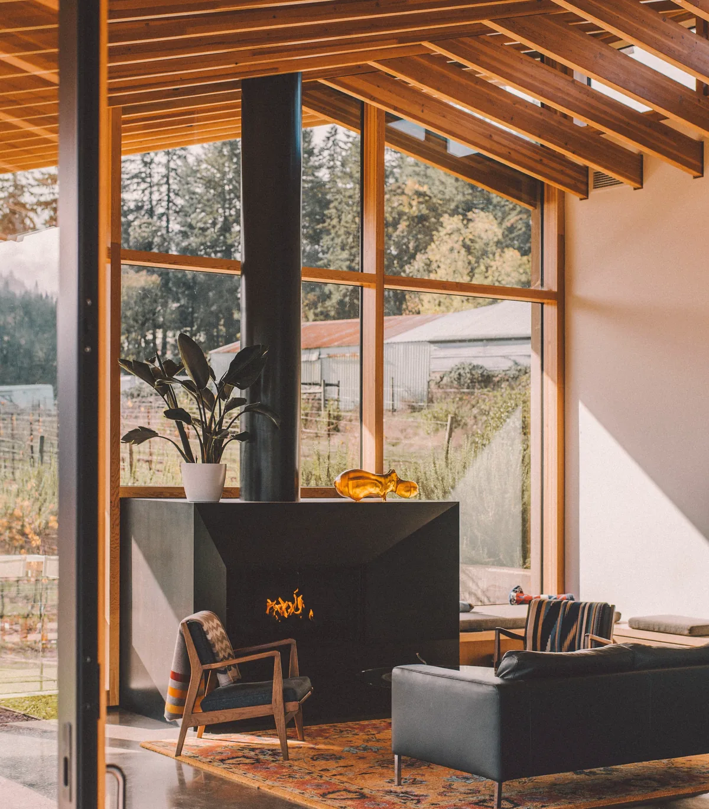
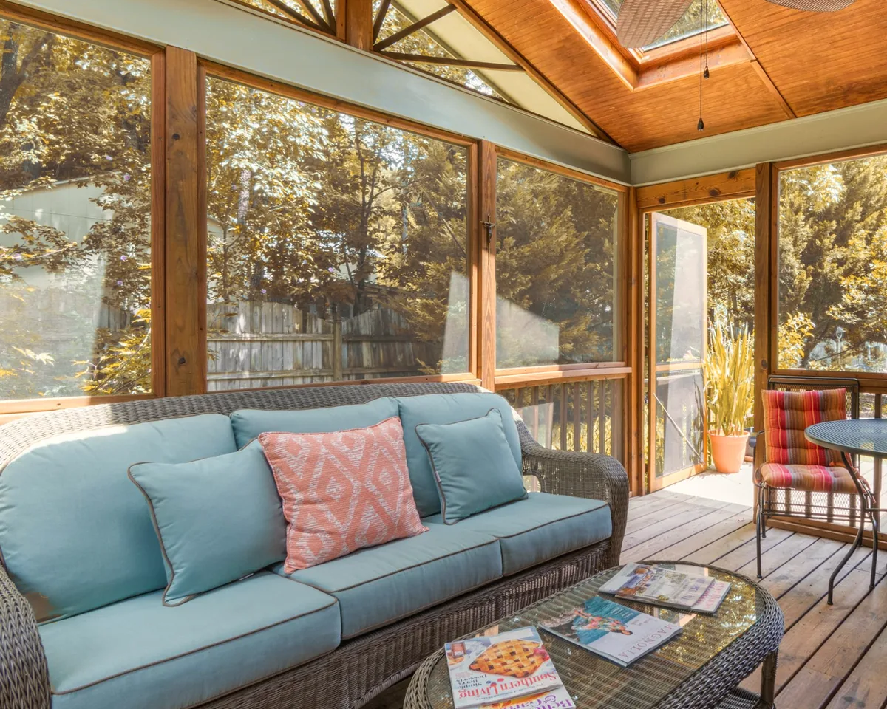

Villages
Sturgeon Bay is the county seat in the south. Up the peninsula come Egg Harbor, Fish Creek, Ephraim and Sister Bay, each a few streets of white clapboard houses, churches and shops.

Cottages, farmhouses and year-round houses across Door County, sold on the calendar of a place with one real season.
Talk before you drive upEphraim, in October
About Bernie
Before I ever showed anyone a house, I did the books and the bookings for an orchard and a handful of seasonal cottages. Changeovers, the plumber in May, and the bills that turn up in February when nothing is coming in.
People kept asking what a place was actually like to own rather than to visit, and I kept having the answer, usually an unwelcome one. It is still the question I am best at.
How I workWhat is out here
From brick farmhouses in the south to cottages in the northern woods. None of these is for sale. They are the kinds of houses people call me about.
Access, plowing and what the last mile does off-season. The part that does not show in July.
I ran the bookings and the bills on seasonal property, so the holding questions come up early instead of in year two.
The season is short and everything out here runs to its calendar. I work backwards from that rather than hoping.
The place

Sturgeon Bay is the county seat in the south. Up the peninsula come Egg Harbor, Fish Creek, Ephraim and Sister Bay, each a few streets of white clapboard houses, churches and shops.

Between the villages the county is farm country: dairy barns, hayfields and long straight roads. A farmhouse here comes with land, and with its own set of questions.
Cherry and apple, in rows, are the county’s signature crop. They put on blossom in spring and throw long shadows by late season, and a back-road drive through them is worth the extra hour in either.

Inland, the peninsula is hardwood forest and open fields, and the color comes through the whole of it in early fall. Looking out from Potawatomi State Park.


Tell me what you’re thinking about and when you’re coming. I’ll tell you what is worth seeing.